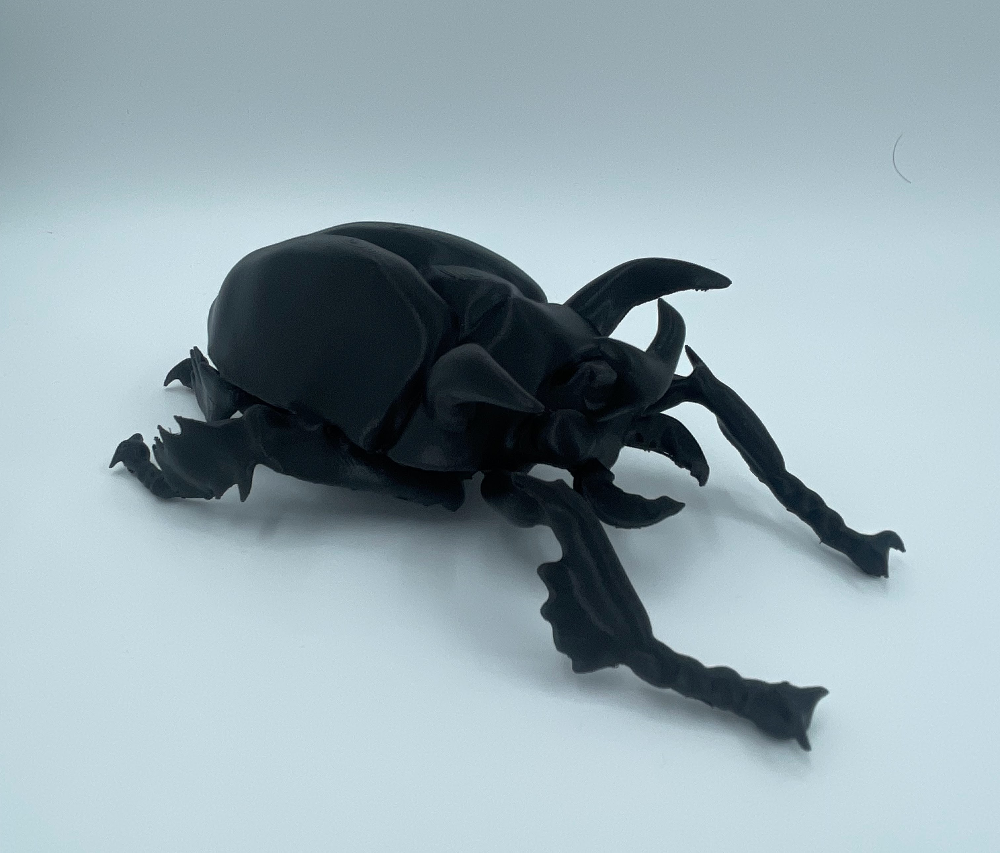

Je hebt een lieveheersbeestje gevonden!
📍 Spoorpark, Tilburg •

Waar leven lieveheersbeestjes het liefst?
Lieveheersbeestjes houden van bladeren en lage begroeiing — daar vinden ze hun voedsel.

Bron: Unsplash – Noah Silliman
Waarom is lage begroeiing zo belangrijk?
Lage planten met veel bladeren lijken misschien gewoon groen, maar ze zijn vitaal voor lieveheersbeestjes! Deze bladeren herbergen luizen en andere kleine insecten die het voedsel zijn van lieveheersbeestjes. Zonder deze planten hebben lieveheersbeestjes niets te eten.
🍽️ Waarom komt dit lieveheersbeestje hier?
Lieveheersbeestjes eten luizen, melige luizen en andere kleine bladluis-soorten. Een enkel lieveheersbeestje kan per dag tot 50 luizen eten! Dit maakt hen ongelooflijk waardevol voor planten die door luizen worden aangevallen. Bladeren met veel plantensappen trekken luizen aan, en luizen trekken lieveheersbeestjes aan.
🌍 Wat doet dit lieveheersbeestje voor de natuur?
Het lieveheersbeestje is een natuurlijke plaagbestrijder. Door luizen te eten, beschermen lieveheersbeestjes planten tegen massale insectenplagen. Dit helpt het hele ecosysteem in evenwicht te blijven. Bovendien zijn lieveheersbeestjes zelf voedsel voor vogels en andere dieren!
⚠️ Waarom moeten we lage planten behouden?
Veel tuinen en groene ruimtes worden schoon gehouden en hebben weinig lage begroeiing. Dit verstoort het voedselweb! Zonder bladeren en lage planten verdwijnen luizen, en zonder luizen verdwijnen lieveheersbeestjes. Als je lage planten laat groeien, creëer je een thuis voor lieveheersbeestjes en hun voedsel!
Wat heb je al gevonden?

kever
Nog te vinden
lieveheersbeestje
✓ Gevonden!

aardhommel
Nog te vinden
Help met onderzoek
Hoeveel lieveheersbeestjes zie jij hier nu?
Max. 5 per keer
Totaal in het Spoorpark
Totaal zijn er
47
lieveheersbeestjes gezien
in het Spoorpark!
Gedeelde waarnemingen
Foto's van andere Wildzoekers die lieveheersbeestjes hebben gezien

Door Sophie • 2 weken geleden

Door Roos • 1 week geleden
Deel jouw foto
Klik om een foto te uploaden
of sleep hier een afbeelding naartoe